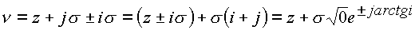
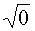
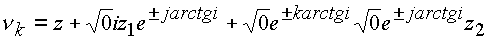
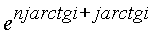

|
В. И. ЕЛИСЕЕВ ВВЕДЕНИЕ В МЕТОДЫ ТЕОРИИ
ФУНКЦИЙ ПРОСТРАНСТВЕННОГО КОМПЛЕКСНОГО ПЕРЕМЕННОГО |
|
4.4. Модель сложного структурного образования
Исследуем простейшую модель частицы, состоящую из двух самостоятельно двигающихся частиц 1, 2 (рис. 49) в сложном структурном образовании. Предположим, что частица находится в состоянии покоя и имеет свое определенное внутреннее состояние.
Рис. 49. Модель сложной частицы
Естественно, каждая из частиц имеет свой туннель. Сложная частица имеет также свой e -туннель. При определенных скоростях, характерных для этой структуры, e -туннели периодически вкладываются один в другой. Частицы рассматриваем как элементарные. Элементарность это признание элементарности блока четырехмерного пространства
,
То есть четырехмерное пространство, которое для сокращения записи будем в дальнейшем обозначать системой векторов (1,
i, j), выступает как элементарное. Оно является элементарным блоком , заполняющим пространство любого числа измерений.В элементарном блоке согласно исследованиям главы 1-й векторы
i и j равноправны, так что пространство может иметь два изолированных направления. Каждому изних будет соответствовать своя циркуляционная кривая.
Функция
В элементарном комплексе можно провести выделение
e -туннеля следующими алгебраическими операциями:.
Эту операцию можно провести и с энергиями в комплексном
пространстве.Таким образом, элементарный комплекс представляет
ядро z, окруженное мнимой оболочкой , которое трактуется как поле определенной физической природы. Эта оболочка адекватна, например, электромагнитному полю (см. рис. 44)Далее, сложный комплекс представим в виде
.
символически запишем системой векторов (1,
i, j)k1.Произведем выделение ядра комплекса и его мнимых оболочек
,
где
z, z1, z2 - комплексы в плоскости.Преобразования показывают, что сложная частица имеет
два изолированных направления, которые создают сложное поле взаимодействия, так составляют единый e -туннель сложной частицы, что следует из третьего члена в выражении.
В этом случае комплексное пространство представимо в виде
:.
Если выполняется условие вида
то комплекс представим с одним сложным e
-туннелем,
где f
, y , y - действительные числаВ сложной системе векторов (1, i,
j)k1 векторы (i, j) элементарного блока (1, i, j) становятся неравноправными, вследствие этого можно предположить, что один участвует в создании одного заряда, а другой - другого.Формирование e -туннелей характеризует заряженность
пространства. Заряд есть e -туннель, это непосредственно вытекает из решения уравнений электродинамики. В этом смысле рассматриваемая модель обладает двумя зарядами: зарядом, связанным с изолированным направлением, и вторым, связанным с другим изолированным направлением.Направление размерность пространства, в котором сформирован e -туннель, определяет физические содержание
заряда (ядерный или электрический). Причем согласно комплексу заряд более высокой размерности пространства подавляет заряд, образованный в структуре с меньшей по величине размерности (рис. 50).С туннелем связаны и спиновые характеристики частиц.
Частицы, самостоятельно двигаясь по траектории типа С3 поляризуются своими e -туннелями относительно общего e -туннеля сложной частицы. Этот вариант был рассмотрен при преобразовании скоростей теории относительности, преобразованных аппаратом комплексной пространственной алгебры. В этом случае один из векторов поляризуется по направлению e -туннеля сложной частицы, а другой усиливает крутящий момент общего e -тунеля (рис. 51).Модель сложной частицы показывает, что через e - туннель идет интенсивный энергетический обмен всех составляющих элементарных частиц. e -туннели, вложенные друг в друга, при формировании пространств высокой размерности, заполняются энергетическими массами. Это заполнение ограничено размерностью пространства. Принцип насыщения энергетических e - туннелей лежит в основе структурирования материи.
Такое обобщение есть следствие характера пространственных кривых С
3,С'3, С"3 часть которых проходит через e -туннель сложной частицы. Вследствие чего этот туннель интенсивно заполняется траекториями. Естественно, что траектории - это геометрическая интерпретация движения энергетических масс.Рис. 50. Пространство более высокой размерности с зарядом, подавляющим заряд пространства меньшей размериости
Из формулы для энергии частицы в комплексном пространстве, выведенной в главе 3, следует, что, с какой бы
скоростью ни двигался объект, модуль его энергии выражается формулой Эйнштейна,
где
;.
Рис. 51. Самосогласовонность полей взаимодействия, вызывающая интегрирование спинов структурных образований, входящих как самостоятельные в более сложное структурное образование
Величина скорости сказывается только на повороте вектора
модуля энергии в пространстве.Имеем несколько предельных случаев:
;;
А
;
Б
.
В этом случае вся энергия превращается в энергию поля частицы. Это выражение имеет смысл неопределенно короткое время
.
ибо при
начинается переход частицы в пространство с другой характеристикой туннеля по предельной скорости и по насыщению.
Необходимо отметить также, что для изолированного направления справедливо
,
где
n любое действительное число, так что частица может проходить через ряд e -туннелей одновременно.В. Если
, то имеем .Частица движется со скоростью
в действительном координатном направлении, то есть строго ориентированно.Разность между энергией
Раскрывая эту формулу, получим
.
При u
=0 модуль кинетической энергии равен нулю, при u = модуль кинетической энергии равенМодуль кинетической энергии частицы всегда превосходит энергию покоя частицы, так как он характеризует насыщение энергией e -туннелей того поля взаимодействия, в котором находится частица.
Поясним это утверждение выкладками. Из энергии частицы всегда можно выделить ее полевую энергию, то есть можно записать
,
для этого достаточно из энергии частицы вычесть и прибавить одно и то же число
и провести преобразования
.
Энергия частицы имеет теперь два слагаемых, одно из которых характеризует зарядовую энергию частицы, другое слагаемое есть энергия ее ядра. Зарядовая энергия сопоставима с кинетической энергией.
Можно провести следующие выкладки:
Таким образом, полевая энергия превратилась в энергию идущую по изолированному направлению. При разгоне частицы часть энергии идет на создание дополнительного тока в туннелях. Этот дополнительный энергетический ток определяет инерциальность системы и идет по e -туннелям полей взаимодействия, в котором находится частица.
Итак, комплексному пространству придаётся вполне определенный смысл: пространство (
Классификация сил, известных в настоящее время, должна быть связана со структурным уровнем материи, в котором они действуют. Законы Кулона, Ньютона есть отражение трехмерности пространства. В комплексном пространстве любого числа измерений модуль действителен и трехмерен.
Наличие e определяет заряд структурного образования. Каждый структурный уровень характеризуется своим количеством e -туннелей и в связи с этим своим зарядом и своими силами.
Согласно изложенной физической трактовке комплексного пространства под микрочастицей понимается часть пространства, изолированного от остального поверхностью, натянутой без точек самопересечения на циркуляционную пространственную кривую типа
e -туннели.
В результате проведенных исследований в главах 1, 2, 3 и физической трактовки пространства выдвигается гипотеза о взаимодействии n-мерных пространств через e -туннели изолированных направлений, когда пространства разной по величине размерности оказывают давление друг на друга через контакты по поверхностям изолированных направлений.
Эта рабочая гипотеза положена в основу обоснования циклонной модели атомного ядра и вывода формулы энергии связи атомных ядер
Мини оглавление:
[0], [1.1.1, 1.1.2, 1.1.3, 1.1.4, 1.1.5, 1.1.6, 1.1.7, 1.1.8, 1.2, 1.2.1, 1.2.2, 1.2.2.a, 1.2.2.b, 1.2.2.c, 1.2.2.d, 1.2.2.e, 1.2.2.f, 1.2.2.g, 1.2.2.h, 1.2.3, 1.3.1, 1.3.2, 1.3.3, 1.3.4, 1.3.5, 1.3.6, 1.4.1, 1.4.2, 1.5, 1.6, 1.7.1, 1.7.2, 1.7.3.1, 1.7.3.2, 1.7.3.3, 1.7.4.1, 1.7.4.2, 1.8.1], [2.1, 2.2],[3.1, 3.2, 3.3, 3.4.1, 3.4.2, 3.4.3, 3.4.4, 3.4.5],[4.1, 4.2, 4.3, 4.4],[5.1, 5.1.Рис.52, 5.2, 5.3, 5.4, 5.4.Т1, 5.4.Т2, 5.4.Т3, 5.5.1, 5.5.2, 5.5.3, 5.5.4],[6.1.1, 6.1.2, 6.2.1, 6.2.2, 6.2.3, 6.2.4, 6.2.5, 6.3, 6.4.1, 6.4.2, 6.5.1, 6.5.2],[7.1, 7.2, 7.3, 7.4, 7.5, 7.6, 7.7.1, 7.7.2, 7.8.1, 7.8.2, 7.8.3, 7.9],[8.1, 8.2.1, 8.2.2, 8.3, 8.4, 8.5, 8.6, 8.6.T1, 8.7, 8.8.1, 8.8.2, 8.8.3, 8.9.1, 8.9.2, 8.9.3, 8.10, 8.10.T2, 8.10.T3],[9.1, 9.2, 9.3, Рис.88, 89, 90, 91, 92, 93, 94, 95, 96, 97, 98, 99, 100],[10.1, 10.2, 10.3, 10.4, 10.5, 10.6, 10.7, 10.8, 10.9, 10.10, 10.11, 10.12, 10.13, 10.14, 10.15.1, 10.15.2, 10.16.1, 10.16.2, 10.17, 10.18],[11]
Размещенный материал является электронной версией книги: © В.И.Елисеев, "Введение в методы теории функций пространственного комплексного переменного", изданной Центром научно-технического творчества молодежи Алгоритм. - М.:, НИАТ. - 1990. Шифр Д7-90/83308. в каталоге Государственной публичной научно-технической библиотеки. Сайт действует с 10 августа 1998.
E-mail: mathsru@gmail.com